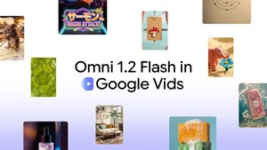
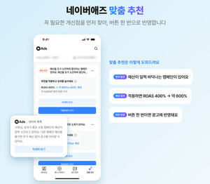
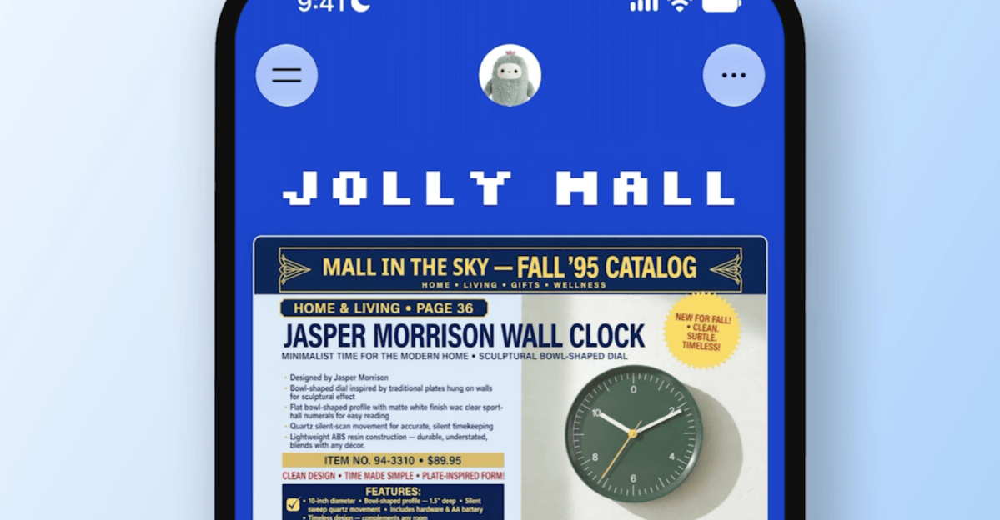

01 · KR
Google Vids × Gemini Omni
짧은 영상 제작을 무료·저비용 워크플로로
AI타임스는 Google Vids에서 15초 AI 영상 생성이 가능해지고 생성 비용이 30% 인하됐다고 보도했다. 아이디어를 바로 시안으로 바꾸는 제작 접근성이 핵심이다.
원문 보기 ↗ADDIT INSIGHT
영상 AI의 경쟁력은 생성 품질만이 아니라 아이디어를 바로 시안으로 바꾸는 접근성에서 생긴다.
Google Vids·네이버애즈·경리나라 MCP·Meta Muse Spaces·Perplexity Teammates를 통해 콘텐츠와 업무가 ‘한 번의 생성’에서 ‘계속 작동하는 흐름’으로 이동하는 장면을 살펴봅니다.
오늘은 AI를 잘 쓰는 법보다, AI가 만든 결과가 다음 행동과 데이터와 실행으로 이어지는 구조를 점검합니다.
Google Vids, 15초 AI 영상 제작을 무료·저비용 흐름으로 확장
네이버애즈, 광고 성과 진단에서 개선안 제안까지 자동화
경리나라 MCP, 입출금·세금계산서를 쓰던 AI에서 분석
Meta Muse, 목적별 업무 공간을 대화로 만들고 자동 갱신
Perplexity Teammates, 일회성 명령을 상시 프로젝트로 전환

짧은 영상 제작을 무료·저비용 워크플로로
AI타임스는 Google Vids에서 15초 AI 영상 생성이 가능해지고 생성 비용이 30% 인하됐다고 보도했다. 아이디어를 바로 시안으로 바꾸는 제작 접근성이 핵심이다.
원문 보기 ↗영상 AI의 경쟁력은 생성 품질만이 아니라 아이디어를 바로 시안으로 바꾸는 접근성에서 생긴다.

광고 성과 진단을 다음 액션 제안으로 연결
AI타임스는 네이버가 광고 성과를 AI로 진단하고 문제 지점과 개선안을 제안하는 ‘네이버애즈’ 개편을 보도했다. 광고 운영의 판단 지점을 줄이는 접근이다.
원문 보기 ↗광고 자동화는 리포트를 줄이는 데서 끝나지 않고 예산·소재·타깃의 다음 행동까지 연결해야 한다.
회계 데이터를 익숙한 AI 대화창으로 가져오기
AI타임스는 웹케시가 생성 AI와 연결되는 ‘경리나라 MCP’를 12월 출시할 예정이라고 보도했다. 입출금과 세금계산서 같은 데이터를 별도 시스템을 오가지 않고 분석하는 사용 장면을 제시한다.
원문 보기 ↗사내 AI 도입의 첫 단추는 새 도구보다 이미 쌓인 데이터를 안전하게 연결하는 것이다.

목적별 앱 화면을 대화로 만들고 자동 갱신
The Verge는 Muse에서 쇼핑 허브·학교 대시보드·음악 트래커·퀴즈 등 맞춤형 Spaces를 만들 수 있다고 보도했다. 외부 앱을 연결하면 가격·일정 정보가 백그라운드에서 갱신된다.
원문 보기 ↗에이전트 UX는 하나의 거대한 화면보다 목적별로 작동하는 작은 업무 공간을 만드는 방향으로 간다.

일회성 명령을 상시 프로젝트 운영으로 전환
The Decoder는 Teammates가 가상머신과 브라우저에서 업무를 계속 수행하고 전용 스레드와 Slack으로 진행 상황을 확인한다고 전했다. Max 요금제는 월 200달러다.
원문 보기 ↗에이전트를 도입할 때는 자동화 범위보다 실행 시간·사용량·승인 지점을 먼저 설계해야 한다.
아이디어 → 짧은 시안 → 사람 검수 → 재사용 가능한 에셋으로 연결하세요.
광고·회계·고객 데이터를 AI에 넣기 전 권한과 최신성 기준을 먼저 정하세요.
상시 실행 업무에는 비용 상한·승인 지점·실패 시 사람 개입을 붙이세요.